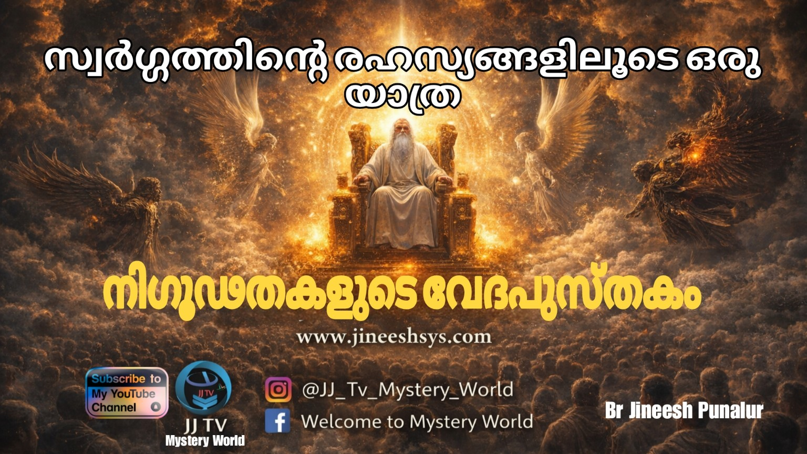

നിഗൂഢതകളുടെ വേദപുസ്തകം: സ്വർഗ്ഗത്തിന്റെ രഹസ്യങ്ങളിലൂടെ ഒരു യാത്ര
നിഗൂഢതകളുടെ വേദപുസ്തകം: സ്വർഗ്ഗത്തിന്റെ രഹസ്യങ്ങളിലൂടെ ഒരു യാത്ര
വിശുദ്ധ വേദപുസ്തകത്തിൽ പരാമർശിച്ചിരിക്കുന്ന, എന്നാൽ ഇന്നും മനുഷ്യബുദ്ധിക്ക് അപ്രാപ്യമായ നിഗൂഢ ജീവികളെക്കുറിച്ച് എത്രപേർക്കറിയാം? ചിലത് നമുക്ക് പരിചിതമെങ്കിൽ, മറ്റു ചിലത് ഇന്നും അന്ധകാരത്തിന്റെ മറപറ്റി നിൽക്കുന്നു. സ്വർഗ്ഗീയ കെരൂപുകൾ മുതൽ സാറാഫുകൾ വരെയും, ചിറകുകളുള്ള ഗംഭീരമായ രൂപങ്ങൾ വരെയും നീളുന്ന ദൈവീക സൃഷ്ടികൾ ആശയക്കുഴപ്പങ്ങൾക്കും അപ്പുറമാണ്. അതുപോലെതന്നെ, 'ഭീമന്മാർ' അഥവാ നെഫിലിമുകളുടെ ഉത്ഭവവും പ്രകൃതിയും അനന്തമായ സംവാദങ്ങൾക്ക് തിരികൊളുത്തിയിരിക്കുന്നു.
മാലാഖമാരെക്കുറിച്ച് നാം കേട്ടിട്ടുണ്ട്; അവർ മാനുഷിക രൂപത്തിനേക്കാൾ ഉപരിയായി അമാനുഷിക കഴിവുള്ളവരാണ്. അവരിൽ വെച്ച് ഏറ്റവും സൗന്ദര്യമുള്ളവനും കഴിവുള്ളവനും ആയിരുന്നു ലൂസിഫർ. എന്നാൽ അവന്റെ ഉള്ളിൽ മുളച്ച അഹങ്കാരം കാരണം ദൈവം അവനെ സ്വർഗ്ഗത്തിൽ നിന്നും ഭൂമിയിലേക്ക് തള്ളിയിട്ടു. അവനാണ് ഇന്ന് നമ്മുടെ ആത്മീയ എതിരാളി. ഈ കാര്യങ്ങൾ നമ്മെ അസ്വസ്ഥപ്പെടുത്തുന്നുണ്ടെങ്കിലും, അതോടൊപ്പം തന്നെ അതീവ കൗതുകകരമായ ഒരു വിഷയം കൂടിയാണിത്.
ദൈവത്തിന്റെ സിംഹാസനത്തിന് ചുറ്റുമുള്ള ജീവികൾ, വെളിപാട് പുസ്തകത്തിലെ വിചിത്ര രൂപികൾ, ദാനിയേലിന്റെയും എസക്കിയേലിന്റെയും പ്രവചനങ്ങളിൽ ദൈവം പ്രത്യക്ഷപ്പെടുമ്പോൾ കാണപ്പെടുന്ന ജീവികൾ എന്നിങ്ങനെ ബൈബിളിൽ ഉടനീളം വ്യത്യസ്തങ്ങളായ അനേകം സൃഷ്ടികളെ കാണാം. പലരും ഇവയെക്കുറിച്ച് പല വ്യാഖ്യാനങ്ങളും നൽകുന്നുണ്ടെങ്കിലും, ഈ ജീവികളുടെ യഥാർത്ഥ സത്യാവസ്ഥ ഇന്നും ലോകത്തിന് മുന്നിൽ ഒരു ചോദ്യചിഹ്നമായി, പൂർണ്ണമായി വെളിപ്പെടാതെ നിഗൂഢമായിത്തന്നെ തുടരുന്നു. വ്യത്യസ്ത രൂപവും, സ്വഭാവവും, അമാനുഷിക ശക്തിയുമുള്ള ദൈവത്തിന്റെ ഈ വിചിത്ര സൃഷ്ടികളെ പൂർണ്ണമായി വ്യാഖ്യാനിക്കുക എന്നത് മനുഷ്യന് അസാധ്യമാണ്.
1. കെരൂപുകളും സാറാഫുകളും: ദൈവതേജസ്സിന്റെ കാവൽക്കാർ
കെരൂപുകളും സാറാഫുകളും ദൈവവുമായി അങ്ങേയറ്റം ബന്ധപ്പെട്ടവയാണ്. ഇവരുടെ സാന്നിധ്യം ബൈബിളിലെ നിർണ്ണായക ഭാഗങ്ങളിൽ വിവരിച്ചിരിക്കുന്നു. ഇവരെക്കുറിച്ചുള്ള ഓരോ വചനഭാഗവും ഗൂഢാലോചനയുടെയും രഹസ്യങ്ങളുടെയും ഒരു പാളി തന്നെ തുറക്കുന്നു. കെരൂപുകൾ പലപ്പോഴും ഒന്നിലധികം രൂപങ്ങളെ പ്രതിനിധീകരിക്കുന്നു; ചിറകുകളും മനുഷ്യന്റെ മുഖവുമുള്ള ഇവർ ദൈവത്തിന്റെ മഹത്വത്തിന്റെ കാവൽക്കാരാണ്. ഏദൻ തോട്ടത്തിന്റെ കിഴക്കും, സാക്ഷ്യപെട്ടകത്തിന് ചുറ്റും ജ്വലിക്കുന്ന വാളുകളുമായി നിൽക്കുന്ന ഇവരെ നാം കാണുന്നു.
മറുവശത്ത്, സാറാഫുകൾ ദൈവത്തിന്റെ സിംഹാസനത്തെ തങ്ങളുടെ ചിറകുകൾ കൊണ്ട് വലയം ചെയ്യുകയും, "ദൈവം വിശുദ്ധൻ, വിശുദ്ധൻ, വിശുദ്ധൻ" എന്ന് സദാസമയവും ആർത്തുവിളിച്ചുകൊണ്ട് ദൈവത്തെ സ്തുതിക്കുകയും ചെയ്യുന്നു. സ്വർഗ്ഗം ഈ ജീവികളെക്കുറിച്ച് ധാരാളം സൂചനകൾ തരുന്നുണ്ടെങ്കിലും, ഇവ ഇന്നും ഒരു രഹസ്യമായി തുടരുന്നു. ഇവരിൽ അടങ്ങിയിരിക്കുന്ന ഏറ്റവും വലിയ സത്യം, ഇവർ ദൈവവുമായി നേരിട്ട് ബന്ധപ്പെട്ടിരിക്കുന്നു എന്നത് തന്നെയാണ്.
2. ഭീമന്മാർ (Giants/Nephilim): പുരാതന വീരന്മാർ
ഭീമന്മാർ അഥവാ മല്ലന്മാരുടെ ഉത്ഭവം ഇന്നും ഒരു വലിയ ചർച്ചാവിഷയമായി തുടരുന്നു. ഉല്പത്തി പുസ്തകം 6:4-ൽ ഇവരെക്കുറിച്ച് വ്യക്തമായി പരാമർശിക്കുന്നുണ്ട്: "അക്കാലത്തു ഭൂമിയിൽ മല്ലന്മാർ ഉണ്ടായിരുന്നു; അതിന്റെ ശേഷവും ദൈവത്തിന്റെ പുത്രന്മാർ മനുഷ്യരുടെ പുത്രിമാരുടെ അടുക്കൽ ചെന്നിട്ടു അവർ മക്കളെ പ്രസവിച്ചു; ഇവരാകുന്നു പുരാതനകാലത്തെ വീരന്മാർ, കീർത്തിപ്പെട്ട പുരുഷന്മാർ തന്നേ."
എന്നാൽ ഇന്നുവരെ ഇതിന്റെ പൂർണ്ണമായ സത്യം എന്താണെന്ന് പുറത്തുവന്നിട്ടില്ല. എങ്കിലും ഒരു കാര്യത്തിൽ നമുക്ക് മുഖം തിരിക്കാൻ കഴിയില്ല; ഇന്നും ആ വലിയ ജീവിവർഗ്ഗത്തിന്റെ—ഭീമന്മാരുടെ—അവശിഷ്ടങ്ങൾ ഭൂമിയിൽ നിന്നും കണ്ടുകിട്ടിക്കൊണ്ടിരിക്കുന്നു എന്നത് ഒരു യാഥാർത്ഥ്യമാണ്. വേദപുസ്തകത്തിൽ ഇത്തരം രഹസ്യങ്ങളും നിഗൂഢതകളും ഉള്ളതുകൊണ്ട് തന്നെ, അത് വീണ്ടും വീണ്ടും വായിക്കുവാനുള്ള നമ്മുടെ താൽപ്പര്യം വർദ്ധിച്ചുകൊണ്ടേയിരിക്കുന്നു.
3. മാലാഖമാർ: സ്വർഗ്ഗീയ ദൂതന്മാർ
മാലാഖമാരെക്കുറിച്ച് നമുക്ക് സാമാന്യം അറിവുണ്ട്. അമാനുഷിക കഴിവുകളുള്ള ഇവരെ ബൈബിളിലുടനീളം പലയിടങ്ങളിലായി കാണാം. സ്വർഗ്ഗീയ സൈന്യത്തിലെ ഉഗ്രരായ നേതാക്കളാണ് ഇവർ. ദൈവീക സന്ദേശങ്ങൾ കൈമാറാനും, പല സന്ദർഭങ്ങളിലും മനുഷ്യരെ സഹായിക്കാനും, നയിക്കാനും, സംരക്ഷിക്കാനും ഇവർ ഭൂമിയിൽ പ്രത്യക്ഷപ്പെടാറുണ്ട്.
ബൈബിളിലെ മറ്റൊരു കൗതുകകരമായ വശം, പ്രധാന ദൂതന്മാർ അടക്കം നിരവധി റാങ്കുകളുള്ള ദൂതന്മാരെ അത് പരിചയപ്പെടുത്തുന്നു എന്നതാണ്. ഗബ്രിയേൽ ദൂതനെപ്പോലെ പേരെടുത്തു പറയുന്നവരും, കെരൂപുകളും സാറാഫുകളും അടങ്ങുന്ന വലിയൊരു നിര തന്നെയുണ്ട്. ഇവർക്ക് സ്വപ്നങ്ങളിൽ പ്രത്യക്ഷപ്പെടാൻ കഴിയും. സ്വർലോകത്തിലെ ദുഷ്ട സേനയോട് യുദ്ധം ചെയ്യാൻ സന്നദ്ധരായവരാണിവർ. ഇവർ ദൈവത്തെപ്പോലെ സർവ്വവ്യാപികളോ സർവ്വജ്ഞരോ അല്ല, എങ്കിലും ശക്തികളാൽ ഇവർ സമ്പന്നമാണ്. മനുഷ്യരാശിയോട് ഏറ്റവും അടുത്ത് ഇടപെടാനും സംസാരിക്കുവാനും അനുവാദം ലഭിച്ചവരാണിവർ. എന്നിരുന്നാലും, നിഗൂഢമായ സ്വഭാവങ്ങളും കഴിവുകളുമുള്ള ഈ ദൈവദൂതന്മാരെക്കുറിച്ച് ഇതിൽ കൂടുതൽ വ്യക്തമായ തെളിവുകളൊന്നും ബൈബിൾ നൽകുന്നില്ല.
4. സാത്താൻ: ഇരുളിന്റെ ശക്തികൾ
വേദപുസ്തകത്തിലെ 'ഇരുണ്ട അധ്യായം' എന്ന് വിശേഷിപ്പിക്കാവുന്നത് സാത്താനും അവന്റെ കൂട്ടാളികളുമാണ്. 'എതിരാളികൾ' എന്നാണ് വേദപുസ്തകം ഇവരെ കൂടെക്കൂടെ വിശേഷിപ്പിക്കുന്നത്. ബൈബിളിലെ പ്രധാന വില്ലൻ കഥാപാത്രം തന്നെയാണിത്. ഹവ്വയെ പ്രലോഭിപ്പിച്ച് സർപ്പമായി ഉല്പത്തിയിൽ പ്രത്യക്ഷപ്പെടുന്നത് മുതൽ അവന്റെ കളി തുടങ്ങുന്നു. ഭൂതങ്ങളെ സംബന്ധിച്ചിടത്തോളം, ദൈവത്തിന്റെ പദ്ധതിയെ തടസ്സപ്പെടുത്തുക എന്നതാണ് പ്രധാന ലക്ഷ്യം.
സ്വർഗ്ഗത്തിൽ നിന്ന് വീണുപോയ ദൂതന്മാർ സാത്താന്റെ അനുയായികളും, ദൈവഹിതത്തെ എതിർക്കുന്നവരുമാണ്. ഇവരുടെ നിഗൂഢ സ്വഭാവം നമ്മെ പലപ്പോഴും ആശയക്കുഴപ്പത്തിലാക്കാറുണ്ട്. ദൈവത്തിന്റെ പ്രവർത്തിയിൽ സംഘർഷവും പിരിമുറുക്കവും സൃഷ്ടിച്ച്, മനുഷ്യരെ അളവില്ലാത്ത വേവലാതിയിലേക്ക് തള്ളിവിടുക എന്നതാണ് ഇവരുടെ രീതി. ലൂസിഫർ സ്വർഗ്ഗത്തിൽ നിന്നും വെട്ടിയിടപ്പെട്ടപ്പോൾ, അവൻ അനേകം ദൂതന്മാരെയും കൂടെ ഭൂമിയിലേക്ക് വീഴ്ത്തി. ഈ വീണുപോയ ദൂതന്മാരും ലൂസിഫറും ചേർന്ന് ദൈവജനത്തിന് എതിരായും, മനുഷ്യരെ പാപം ചെയ്യിപ്പിക്കാനും കഠിനമായി പ്രയത്നിക്കുന്നു. ദൈവത്തോടുള്ള എതിർപ്പ് അവർ തീർക്കുന്നത് ഭൂമിയിലെ ദൈവത്തിന്റെ സൃഷ്ടിയായ ജനങ്ങളോടാണ്. എന്നാൽ, ഇവരെക്കുറിച്ച് കൂടുതൽ ആഴത്തിൽ പഠിക്കാൻ പോയാൽ ഭയത്തിന്റെ വലിയ മുറിവുകൾ നാം ഏൽക്കേണ്ടി വന്നേക്കാം.
5. നാല് ജീവികൾ
വെളിപാട് പുസ്തകത്തിൽ അതീവ നിഗൂഢമായാണ് ഈ നാല് ജീവികളെയും വിവരിച്ചിരിക്കുന്നത്. ഓരോന്നിനും ആറു ചിറകുകളും, ഒപ്പം സിംഹാസനത്തെ ചുറ്റിപ്പറ്റിയുള്ള കണ്ണുകളുമുണ്ട്. ഭൗമികവും ദൈവീകവുമായ ഒരു ശ്രദ്ധേയമായ മിശ്രിത രൂപമാണ് ദൈവം ഇവർക്ക് നൽകിയിരിക്കുന്നത്.
പരിചിതമായ മൃഗങ്ങളുമായാണ് ഇവരെ താരതമ്യം ചെയ്യുന്നത്:
ആദ്യത്തെ ജീവി സിംഹത്തോട് സാദൃശ്യമുള്ളതും, മഹത്വവും ശക്തിയും ഉൾക്കൊള്ളുന്നതുമാണ്.
രണ്ടാമത്തേത് കാളയുമായി താരതമ്യപ്പെടുത്തുന്നു; ഇത് ക്ഷീണിക്കാത്ത ഉത്സാഹത്തെ പ്രതീകപ്പെടുത്തുന്നു.
മൂന്നാമത്തെ ജീവിക്ക് സേവനവും ബുദ്ധിയും പ്രകടമാക്കുന്ന മനുഷ്യന്റെ മുഖമാണ്.
നാലാമത്തേത് ഉയർന്നു പറക്കുന്ന കഴുകന് തുല്യമായ സ്വാതന്ത്ര്യത്തെ സൂചിപ്പിക്കുന്നു.
ആത്മീയത ഈ ജീവികളിൽ ഒരിക്കലും അവസാനിക്കുന്നില്ല. മനുഷ്യമുഖമുള്ളവരായാലും വ്യത്യസ്ത രൂപമുള്ളവരായാലും, സ്വർഗ്ഗത്തിൽ ഉടനീളം ഇവരെല്ലാം ഒരേ സ്വരത്തിൽ പറയുന്നു: "പരിശുദ്ധനായ ദൈവമേ, നീ പരിശുദ്ധൻ, പരിശുദ്ധൻ…"
6. വെളിപാടിലെ മൃഗം
അടുത്തതായി നാം കാണുന്നത് തിന്മയുടെയും കുഴപ്പത്തിന്റെയും പ്രതീകമായ ഒരു മൃഗത്തെയാണ്. വെളിപാട് പുസ്തകം പതിമൂന്നാം അധ്യായത്തിൽ പറയുന്നതുപോലെ, ആ മൃഗം തിന്മയുടെ മൂർത്തീഭാവമാണ്. ഈ മൃഗത്തെക്കുറിച്ച് പലതരത്തിലുള്ള വ്യാഖ്യാനങ്ങൾ നാം വായിച്ചിട്ടുണ്ടാകാം, അല്ലെങ്കിൽ കേട്ടിട്ടുണ്ടാകാം. നൂറ്റാണ്ടുകളായി ദൈവത്തിന്റെ ദാസന്മാർ അനേകം വ്യാഖ്യാനങ്ങൾ നമ്മുടെ മുന്നിൽ കൊണ്ടുവരികയും, അതിലൂടെ പല കാര്യങ്ങൾ നമ്മളോട് പറയുകയും ചെയ്തിട്ടുണ്ട്. എന്നാൽ ഞാൻ വിശ്വസിക്കുന്നത് "Something is Different" എന്നാണ്; കാര്യങ്ങൾ അത്ര ലളിതമല്ല. വേദപുസ്തകത്തിലെ ഈ നിഗൂഢത എന്നെ വീണ്ടും വീണ്ടും അത് വായിക്കാൻ പ്രേരിപ്പിക്കുന്നു… ചെവിയുള്ളവൻ കേൾക്കട്ടെ!
7. ചുഴലിക്കാറ്റും അഗ്നി രഥവും
വേദപുസ്തകത്തിൽ നിഗൂഢമായ ദൈവീക ഇടപെടലുകൾ നമുക്ക് ദർശിക്കാൻ കഴിയും. ഏലിയാവിനെ സ്വർഗ്ഗത്തിലേക്ക് കൂട്ടിക്കൊണ്ടുപോയ ചുഴലിക്കാറ്റും, എലീശ കണ്ട ആ അഗ്നിരഥങ്ങളും അതിശയിപ്പിക്കുന്ന സ്വർഗ്ഗീയ ഇടപെടലുകളാണ്. അവർ സംസാരിച്ചുകൊണ്ടു നടക്കുമ്പോഴാണ് അഗ്നിരഥം വന്ന് അവരെ തമ്മിൽ വേർപിരിച്ചത്; അങ്ങനെ ഏലീയാവു ചുഴലിക്കാറ്റിൽ സ്വർഗ്ഗത്തിലേക്കു എടുക്കപ്പെട്ടു. ഇതിലെ ഏറ്റവും വലിയ മർമ്മം എന്നത് എലീശ പ്രവാചകൻ ആ അഗ്നിരഥത്തെ കണ്ടു എന്നതാണ്.
അവിടെ എലീശ വിളിച്ചു പറയുന്നുണ്ട്: "എന്റെ പിതാവേ, എന്റെ പിതാവേ, യിസ്രായേലിന്റെ തേരും തേരാളികളും!" ഇതും വേദപുസ്തകത്തിൽ ഒളിഞ്ഞുകിടക്കുന്ന വലിയൊരു രഹസ്യം തന്നെയാണ് - എന്താണ് യഥാർത്ഥത്തിൽ ഈ അഗ്നിരഥം?
8. അളവുനൂലുമായി നിൽക്കുന്ന മനുഷ്യൻ
സെഖര്യാവിന്റെ പുസ്തകം വായിക്കുമ്പോൾ, യെരുശലേമിനെക്കുറിച്ചുള്ള ദൈവത്തിന്റെ പദ്ധതിയെ പ്രതീകപ്പെടുത്തുന്ന കാര്യങ്ങൾ കാണാം. അവിടെ നാം ഒരു മനുഷ്യനെ കാണുന്നു; പ്രവാചകൻ തലപൊക്കി നോക്കിയപ്പോൾ അളവുനൂൽ കൊണ്ട് യെരുശലേമിനെ അളക്കാൻ പോകുന്ന ഒരു മനുഷ്യൻ. ഈ മനുഷ്യനെ വേദപുസ്തകം വിശേഷിപ്പിക്കുന്നത് എന്താണെന്ന് പല പണ്ഡിതന്മാരും പല അഭിപ്രായങ്ങളാണ് പറയുന്നത്. ചിലർ ഇത് ദൈവത്തിന്റെ ദൂതനാണെന്നും, മറ്റു ചിലർ സെഖര്യാവ് പ്രവാചകൻ തന്നെയാണെന്നും വാദിക്കുന്നു. എന്നാൽ ആ വചനം സൂക്ഷ്മമായി വായിക്കുമ്പോൾ നമുക്കൊരു കാര്യം വ്യക്തമാകും - അതൊരു മനുഷ്യൻ തന്നെയാണ്. എന്നാൽ ആരാണ് ആ മനുഷ്യൻ? ആ ചോദ്യം ഇന്നും അവശേഷിക്കുന്നു.
9. മൽക്കിസെദേക്ക്: നിഗൂഢ പുരോഹിതൻ
നിഗൂഢ പുരോഹിതനും ശാലോം രാജാവുമായിരുന്നു മൽക്കിസെദേക്ക്. ഉല്പത്തി പുസ്തകത്തിൽ ഇതിനെക്കുറിച്ച് വ്യാഖ്യാനിക്കുന്നുണ്ട്. അബ്രഹാം യുദ്ധം ജയിച്ചു മടങ്ങി വരുന്ന സമയത്ത് ശാലോം രാജാവ് വരികയും, അപ്പവും വീഞ്ഞും കൊടുക്കുന്നതായിട്ടും കാണാം. അതിൽ പ്രത്യേകമായി എടുത്തു പറയുന്ന ഒരു കാര്യമാണ് മൽക്കിസെദേക്ക് 'അത്യുന്നതനായ ദൈവത്തിന്റെ പുരോഹിതനാണ്' എന്നത്.
ബൈബിളിലെ മറ്റുള്ള വ്യക്തികളിൽ നിന്നും വളരെ വ്യത്യസ്തമായിരുന്നു അദ്ദേഹത്തിന്റെ ജീവിതം. അദ്ദേഹത്തിന്റെ വംശപരമ്പര വിശദീകരിക്കാത്തത് എന്തുകൊണ്ടാണെന്ന് നമുക്കറിയില്ല. ഇതിൽനിന്ന് ഒരു കാര്യം നമുക്ക് മനസ്സിലാക്കാം: അബ്രഹാമിനെ വിളിച്ചിറക്കുന്ന സമയത്ത് തന്നെ, ദൈവത്തിന് ആ സമയത്തും വിശ്വസ്തരായ ദാസന്മാർ ഉണ്ടായിരുന്നു എന്ന സത്യം. 'ശാലോം രാജാവ്' എന്ന തലക്കെട്ട് വിവർത്തനം ചെയ്യുന്നത് തന്നെ 'സമാധാനത്തിന്റെ രാജാവ്' എന്നാണ്. ഈ രാജാവിനെക്കുറിച്ച് വേദപുസ്തകത്തിൽ ഉടനീളം - എബ്രായ ലേഖനം, സങ്കീർത്തനങ്ങൾ, മത്തായിയുടെ പുസ്തകം എന്നിങ്ങനെ പലയിടങ്ങളിലായി ആവർത്തിച്ചു പറയുന്നുണ്ട്. കാരണം, അദ്ദേഹം 100% ദൈവസന്നിധിയിൽ ശുദ്ധനായിരുന്നു. എന്നാൽ അദ്ദേഹം ആരാണെന്നോ, എവിടെ നിന്നാണ് വന്നതെന്നോ, അദ്ദേഹത്തിന്റെ വംശപാരമ്പര്യമോ ഒന്നും പറയാത്തത് ഇന്നും നമ്മുടെ ഇടയിൽ ഒരു നിഗൂഢതയായി തുടരുന്നു.
10. പുരാതനനായവൻ
ദാനിയേൽ പ്രവാചകൻ കണ്ട ഏറ്റവും ഭയങ്കരവും മഹത്വമേറിയതുമായ ദർശനങ്ങളിൽ ഒന്നാണിത് (ദാനിയേൽ 7:9). വസ്ത്രം ഹിമംപോലെ വെളുത്തതും, തലമുടി ശുദ്ധമായ ആട്ടുരോമം പോലെയും ഇരിക്കുന്ന ഒരു വയോധികൻ. അവന്റെ സിംഹാസനം അഗ്നിജ്വാലയും, അതിലെ ചക്രങ്ങൾ കത്തുന്ന തീയും ആയിരുന്നു! ആയിരമായിരം പേർ അവന് ശുശ്രൂഷ ചെയ്യുന്നു; പതിനായിരം മടങ്ങായി പതിനായിരം പേർ അവന്റെ മുമ്പാകെ നിൽക്കുന്നു.
ഈ രൂപം ആരാണ്? ഇത് പിതാവായ ദൈവമാണോ അതോ മനുഷ്യപുത്രനാണോ? ഈ 'പുരാതനനായവന്റെ' മുൻപിൽ ന്യായവിധി നടക്കുമ്പോൾ പുസ്തകങ്ങൾ തുറക്കപ്പെടുന്നു. ദൈവത്തിന്റെ നിത്യതയെയും അധികാരത്തെയും വെളിപ്പെടുത്തുന്ന ഈ ദർശനം ഇന്നും വേദപണ്ഡിതന്മാർക്കിടയിൽ വലിയൊരു അത്ഭുതവും നിഗൂഢതയുമായി നിലകൊള്ളുന്നു.
ഏതു പുസ്തകമെടുത്താലും അതിൽ അനേകം രഹസ്യങ്ങൾ ഒളിഞ്ഞിരിപ്പുണ്ട്. കാര്യങ്ങൾ കൂടുതൽ പഠിക്കുംതോറും, വേദപുസ്തകം വായിക്കാനുള്ള താല്പര്യം വർദ്ധിച്ചുകൊണ്ടേയിരിക്കുന്നു. നിഗൂഢമായ ജീവികൾ, നെഫിലിമുകൾ, ആർക്കും വ്യാഖ്യാനിക്കാൻ കഴിയാത്ത ദൈവീക ഇടപെടലുകൾ... ഇതിൽ നിന്ന് എനിക്കൊരു കാര്യം വ്യക്തമായി: ആർക്കും പൂർണ്ണമായി വ്യാഖ്യാനിച്ചെടുക്കാൻ പറ്റാത്ത രീതിയിൽ, നിഗൂഢമായ ദൈവത്തിന്റെ ഇടപെടലുകളെ വിശദീകരിക്കുന്ന അത്ഭുത ഗ്രന്ഥമാണ് വേദപുസ്തകം.
— Br Jineesh Punalur